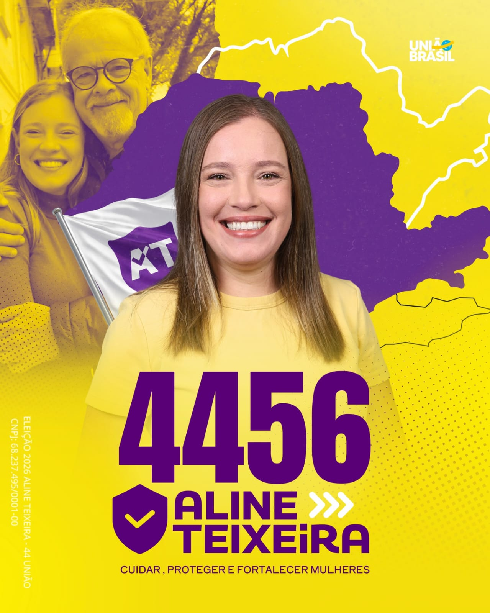
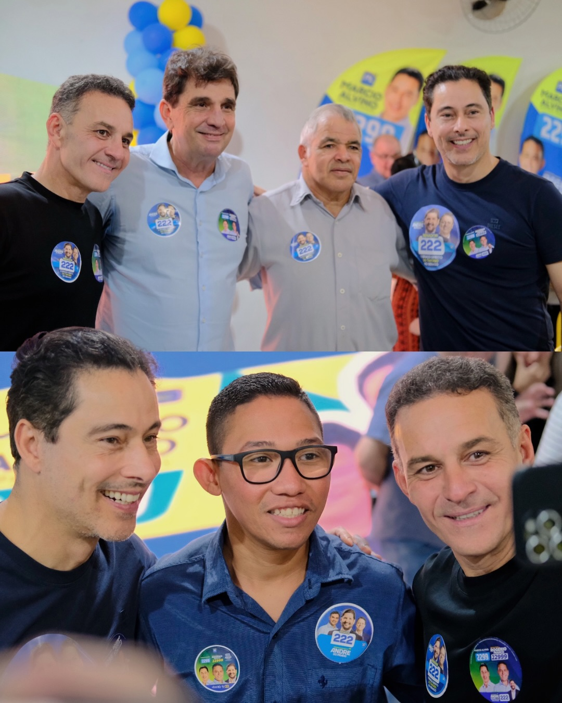

Informação, participação e compromisso com as pessoas, os bairros e o desenvolvimento da comunidade.

Conheça mais sobre Aline e Rogério e acompanhe as informações apresentadas.
Informações sobre áreas importantes para a comunidade e para a melhoria da qualidade de vida.
Fortalecer os direitos das mulheres significa ampliar oportunidades, segurança, respeito, autonomia e dignidade. A informação e a participação são importantes para combater a violência, garantir direitos e dar mais voz às mulheres dentro da comunidade.
Valorizar as mulheres é contribuir para uma comunidade mais justa, segura e com mais oportunidades para todos.
As necessidades da população passam por áreas essenciais como saúde, segurança, infraestrutura e trabalho. Melhorar os serviços, cuidar dos bairros, buscar melhorias urbanas e ampliar oportunidades são pontos importantes para o desenvolvimento da comunidade.
Ouvir as necessidades da população e buscar soluções para os problemas do dia a dia é fundamental para construir uma cidade melhor.
Acompanhe imagens e momentos relacionados ao trabalho e à participação na comunidade.

Siga os perfis para acompanhar informações, novidades e conteúdos.
Acompanhe o canal de Aline Teixeira e fique por dentro dos conteúdos e informações compartilhados.
Acessar canal da AlineConheça os temas, acompanhe os canais e participe das discussões sobre o futuro da comunidade.